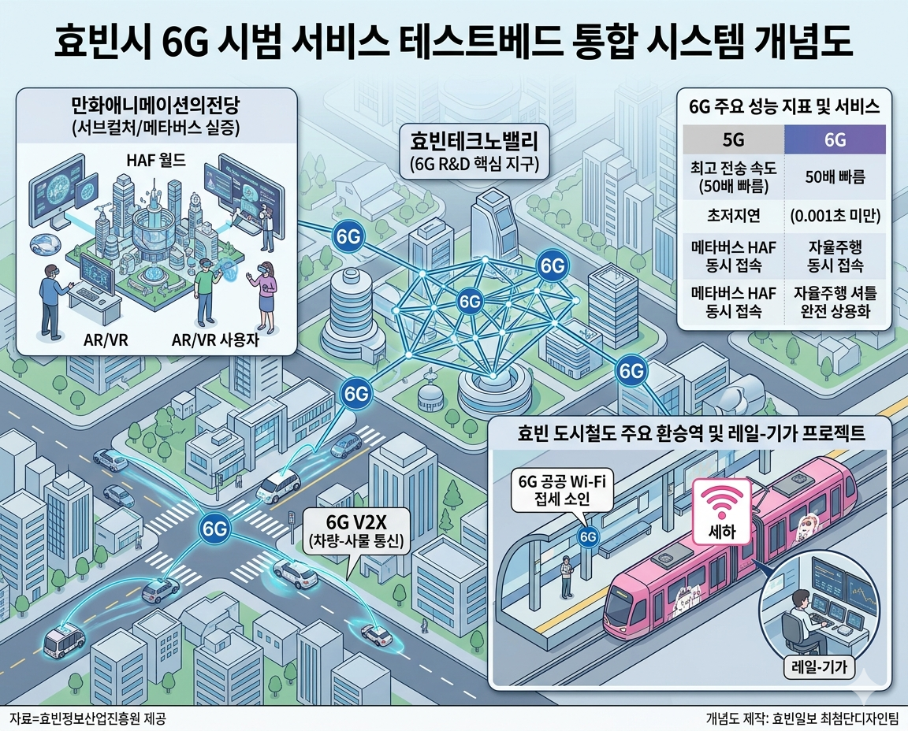

[통신] 효빈시, 국내 최초 '6G 시범 서비스' 대상지 선정
입력 2026.05.08 08:00
과기정통부, 효빈테크노밸리 및 도심 일대 6G 테스트베드 최종 확정
5G보다 50배 빠른 '꿈의 통신'... 메타버스 HAF, 자율주행 셔틀 완벽 연동
박효빈 시장 "서브컬처 인프라와 6G의 만남, 글로벌 콘텐츠 혁명 이끌 것"

[효빈일보 = 박통신 기자] 효빈광역시가 국내 최초로 차세대 이동통신 기술인 '6G(6세대 이동통신)' 시범 서비스 대상지로 최종 선정되며, 진정한 의미의 초연결 스마트시티(Hyper-Connected Smart City)로 도약한다.
8일 과학기술정보통신부와 효빈정보산업진흥원에 따르면, 정부의 '6G R&D 전략' 일환으로 추진되는 이번 시범 사업의 테스트베드로 효빈시가 낙점되었다. 시범망은 첨단 산업 단지인 효빈테크노밸리를 비롯해 만화애니메이션의전당 일대, 그리고 효빈 도시철도 주요 환승역을 중심으로 올해 하반기부터 순차적으로 구축될 예정이다.
6G는 기존 5G 통신보다 최대 50배 빠른 전송 속도와 10분의 1 수준의 초저지연(Ultra-Low Latency) 성능을 자랑하는 '꿈의 통신'이다.
정부가 쟁쟁한 수도권 도시들을 제치고 효빈시를 첫 시범 도시로 선택한 배경에는 효빈시가 선제적으로 구축해 온 막강한 디지털 인프라가 자리 잡고 있다. 특히 최근 테크노밸리에 도입된 '레벨 4 완전 자율주행 셔틀'과 'AI 스마트 신호등'은 0.001초의 통신 지연도 허용하지 않는 6G V2X(차량 사물 통신) 기술을 검증하기에 최적의 환경으로 평가받았다.
아울러 효빈시의 상징인 서브컬처 산업에도 대대적인 혁신이 예고된다. 최근 전 세계에 동시 오픈한 메타버스 플랫폼 'HAF 월드'는 6G 망을 통해 수십만 명의 동시 접속자들에게 지연 없는 홀로그램 라이브 뷰잉과 8K 해상도의 VR 경험을 제공할 수 있게 된다.
효빈교통공사 역시 이번 시범 사업에 적극 동참한다. 공대생 너드라는 독특한 콘셉트로 사랑받는 7호선 마스코트 '임세하'를 전면에 내세워, 지하철 역사 및 트램 내부의 공공 Wi-Fi를 6G 기반으로 전면 업그레이드하는 '레일-기가(Rail-Giga) 프로젝트'를 과기부와 공동 추진할 계획이다.
박효빈 시장은 "효빈시가 6G 시범 도시로 선정된 것은 우리가 쌓아온 디지털 혁신 역량을 국가적으로 인정받은 쾌거"라며, "가장 진보된 6G 통신망과 효빈시의 독보적인 서브컬처 콘텐츠가 만났을 때 폭발할 글로벌 콘텐츠 혁명을 전 세계가 주목하게 될 것"이라고 밝혔다.